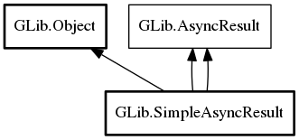

SimpleAsyncResult
Object Hierarchy:
Description:
As of GLib 2.36, SimpleAsyncResult is deprecated in favor of Task, which provides a simpler API.
SimpleAsyncResult implements AsyncResult.
GSimpleAsyncResult handles AsyncReadyCallbacks, error reporting, operation cancellation and the final state of an operation, completely transparent to the application. Results can be returned as a pointer e.g. for functions that return data that is collected asynchronously, a boolean value for checking the success or failure of an operation, or a ssize_t for operations which return the number of bytes modified by the operation; all of the simple return cases are covered.
Most of the time, an application will not need to know of the details of this API; it is handled transparently, and any necessary operations are handled by AsyncResult's interface. However, if implementing a new GIO module, for writing language bindings, or for complex applications that need better control of how asynchronous operations are completed, it is important to understand this functionality.
GSimpleAsyncResults are tagged with the calling function to ensure that asynchronous functions and their finishing functions are used together correctly.
To create a new SimpleAsyncResult, call
SimpleAsyncResult. If the result needs to be created
for a Error, use
SimpleAsyncResult.from_error or
g_simple_async_result_new_take_error. If a Error is not available (e.g.
the asynchronous operation's doesn't take a Error argument), but the result still
needs to be created for an error condition, use
SimpleAsyncResult.error (or set_error_va if your application
or binding requires passing a variable argument list directly), and the error can then be propagated through the use of
propagate_error.
An asynchronous operation can be made to ignore a cancellation event by calling set_handle_cancellation with a SimpleAsyncResult for the operation and false. This is useful for operations that are dangerous to cancel, such as close (which would cause a leak if cancelled before being run).
GSimpleAsyncResult can integrate into GLib's event loop, MainLoop, or it can use Threads. complete will finish an I/O task directly from the point where it is called. complete_in_idle will finish it from an idle handler in the thread-default main context . run_in_thread will run the job in a separate thread and then deliver the result to the thread-default main context.
To set the results of an asynchronous function, set_op_res_gpointer, set_op_res_gboolean, and set_op_res_gssize are provided, setting the operation's result to a gpointer, gboolean, or gssize, respectively.
Likewise, to get the result of an asynchronous function, get_op_res_gpointer, get_op_res_gboolean, and get_op_res_gssize are provided, getting the operation's result as a gpointer, gboolean, and gssize, respectively.
For the details of the requirements implementations must respect, see AsyncResult. A typical implementation of an asynchronous operation using GSimpleAsyncResult looks something like this:
static void
baked_cb (Cake *cake,
gpointer user_data)
{
// In this example, this callback is not given a reference to the cake,
// so the GSimpleAsyncResult has to take a reference to it.
GSimpleAsyncResult *result = user_data;
if (cake == NULL)
g_simple_async_result_set_error (result,
BAKER_ERRORS,
BAKER_ERROR_NO_FLOUR,
"Go to the supermarket");
else
g_simple_async_result_set_op_res_gpointer (result,
g_object_ref (cake),
g_object_unref);
// In this example, we assume that baked_cb is called as a callback from
// the mainloop, so it's safe to complete the operation synchronously here.
// If, however, _baker_prepare_cake () might call its callback without
// first returning to the mainloop — inadvisable, but some APIs do so —
// we would need to use g_simple_async_result_complete_in_idle().
g_simple_async_result_complete (result);
g_object_unref (result);
}
void
baker_bake_cake_async (Baker *self,
guint radius,
GAsyncReadyCallback callback,
gpointer user_data)
{
GSimpleAsyncResult *simple;
Cake *cake;
if (radius < 3)
{
g_simple_async_report_error_in_idle (G_OBJECT (self),
callback,
user_data,
BAKER_ERRORS,
BAKER_ERROR_TOO_SMALL,
"%ucm radius cakes are silly",
radius);
return;
}
simple = g_simple_async_result_new (G_OBJECT (self),
callback,
user_data,
baker_bake_cake_async);
cake = _baker_get_cached_cake (self, radius);
if (cake != NULL)
{
g_simple_async_result_set_op_res_gpointer (simple,
g_object_ref (cake),
g_object_unref);
g_simple_async_result_complete_in_idle (simple);
g_object_unref (simple);
// Drop the reference returned by _baker_get_cached_cake();
// the GSimpleAsyncResult has taken its own reference.
g_object_unref (cake);
return;
}
_baker_prepare_cake (self, radius, baked_cb, simple);
}
Cake *
baker_bake_cake_finish (Baker *self,
GAsyncResult *result,
GError **error)
{
GSimpleAsyncResult *simple;
Cake *cake;
g_return_val_if_fail (g_simple_async_result_is_valid (result,
G_OBJECT (self),
baker_bake_cake_async),
NULL);
simple = (GSimpleAsyncResult *) result;
if (g_simple_async_result_propagate_error (simple, error))
return NULL;
cake = CAKE (g_simple_async_result_get_op_res_gpointer (simple));
return g_object_ref (cake);
}
Namespace: GLib
Package: gio-2.0
Content:
Static methods:
Creation methods:
Methods:
Inherited Members:
All known members inherited from class GLib.Object

All known members inherited from interface GLib.AsyncResult